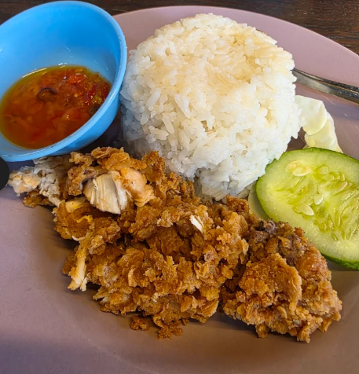

Makanan

Favorit
Ayam Krispy
Ayam goreng dengan balutan tepung bumbu krispy tebal yang digoreng hingga kuning keemasan. Teksturnya sangat renyah di luar namun daging tetap lembut dan juicy di dalam. Disajikan lengkap dengan nasi hangat.
Rp 15.000

Best Seller Pedas
Ayam Geprek Sambel Uleg
Ayam krispy renyah yang digeprek langsung bersama sambel bawang uleg asli dari cabai pilihan dan minyak panas. Rasa pedasnya menggugah selera dan bisa disesuaikan level pedasnya!
Rp 15.000
Minuman
Air Putih (Mineral)
Air mineral kemasan dingin/biasa yang murni dan menyehatkan, sangat cocok untuk meredakan rasa pedas setelah menikmati ayam geprek.
Rp 0

Segar Manis
Es Nutrisari
Minuman sari buah jeruk kaya vitamin C yang disajikan dingin dengan es batu segar. Memberikan sensasi manis dan asam yang pas di tenggorokan.